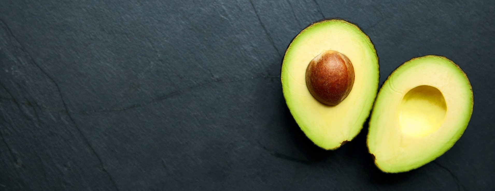
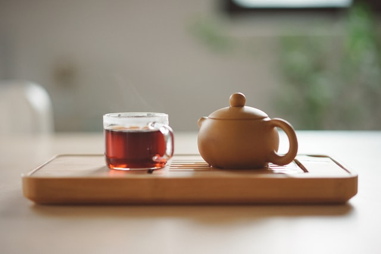

Skaniai sveikai
 Kaip patobulinti receptus, kad pagamintume sveikesnius
patiekalus.
Nedideli receptų ingredientų pakeitimai gali ne tik sumažinti
suvartojamų kalorijų kiekį, bet ir namuose ...paruošiamus patiekalus paversti kur kas sveikesniais.
Kaip patobulinti receptus, kad pagamintume sveikesnius
patiekalus.
Nedideli receptų ingredientų pakeitimai gali ne tik sumažinti
suvartojamų kalorijų kiekį, bet ir namuose ...paruošiamus patiekalus paversti kur kas sveikesniais.
Kaip patobulinti receptus, kad maistas būtų sveikesnis
Kalbant apie receptų keitimą, naudinga pradėti nuo „einamųjų“ maisto produktų: tų produktų, kuriuos galėsite naudoti kasdien. Tokiu būdu ilgalaikėje perspektyvoje įprasite prie sveikesnio maisto.
Keletas patarimų, kaip sumažinti sočiųjų riebalų ir kalorijų kiekį:
1. Pakeiskite sveikesnėmis produktų alternatyvomis
Peržiūrėkite receptų ingredientų sąrašą ir apsvarstykite, ar galite pritaikyti sveikesnes produktų alternatyvas, kad sumažintumėte sočiųjų riebalų ir kalorijų kiekį ar padidintumėte maistinę vertę. Galbūt grietinę galite pakeisti graikišku jogurtu? Ar jau pagamintą faršą - savo pagamintu faršu? O galbūt pasirinkite ruduosius ryžius vietoje išvalytų baltų, tam, kad suvartotumėte daugiau skaidulų.
2. Pakeiskite ingredientų kiekius
Jeigu pagal receptą reikia kepti patiekalą, gal galite jį troškinti ar pakepinti su mažesniu kiekiu riebalų? Taip sumažinsite nevertingų riebalų suvartojimą bei kalorijų kiekį. Ar galite naudoti mažiau druskos ar cukraus? O padvigubinti daržovių kiekį?
3. Pasirinkite teisingus prieskonius ir atsisakykite nesveikų padažų
Pagardinkite patiekalus sveikais prieskoniais be nenaudingų priedų ir venkite nesveikų padažų, kurie sudėtyje turi ne tik kenksmingų ingredientų, bet ir beverčių kalorijų. Vietoje riebių padažų rinkitės širdžiai naudingus geruosius riebalus - šalto spaudimo aliejus.

Cinamono arbata
Apie cinamono naudą ir tai, jog tai vienas naudingiausių mums
gamtos suteikiamų prieskonių, esame girdėję ne kartą. Bet ar žinote,
kad galima pasigaminti cinamono ...arbatą, kuri neturės kofeino, bet bus ypatingai naudinga mūsų
organizmui.
Cinamono nauda: - Stabilizuoja cukraus kiekį kraujyje
- Gerina širdies veiklą
- Turi priešvėžinių savybių
- Turi antibakterinį, antivirusinį ir antimikrobinį poveikį
- Prisideda prie smegenų funkcijos gerinimo
- Gali skatinti svorio metimą
- Gausus antioksidantais
Kaip pasigaminti:
Svarbu atkreiti dėmesį į tai, kokios kokybės cinamoną jūs pasirenkate. Cassia cinamonas - dar kitaip vadinamas "Kinų" cinamonas, yra plačiai paplitęs, kadangi yra labai pigus, tačiau prastos kokybės ir nepasižymintis gydomosiomis savybėmis. Naudingiausias yra Ceilonos cinamonas - jį sunkiau surasti ir jis gerokai brangesnis, tačiau yra vertingas.
Vienas paprasčiausių karštos cinamono prieskonių arbatos gaminimo būdų yra tiesiog įpilti vieną arbatinį šaukštelį malto cinamono į puodelį karšto vandens ir išmaišyti. Taip pat galite pasigaminti cinamono lazdelės arbatos, mirkant cinamono lazdelę verdančiame vandenyje 10–15 minučių .Tokiu būdu išgausite išraiškingesnį skonį ir kuo ilgiau cinamoną kaitinsime, tuo jis naudingesnis ir stipresnis.
Cinamono nauda: - Stabilizuoja cukraus kiekį kraujyje
- Gerina širdies veiklą
- Turi priešvėžinių savybių
- Turi antibakterinį, antivirusinį ir antimikrobinį poveikį
- Prisideda prie smegenų funkcijos gerinimo
- Gali skatinti svorio metimą
- Gausus antioksidantais
Kaip pasigaminti:
Svarbu atkreiti dėmesį į tai, kokios kokybės cinamoną jūs pasirenkate. Cassia cinamonas - dar kitaip vadinamas "Kinų" cinamonas, yra plačiai paplitęs, kadangi yra labai pigus, tačiau prastos kokybės ir nepasižymintis gydomosiomis savybėmis. Naudingiausias yra Ceilonos cinamonas - jį sunkiau surasti ir jis gerokai brangesnis, tačiau yra vertingas.
Vienas paprasčiausių karštos cinamono prieskonių arbatos gaminimo būdų yra tiesiog įpilti vieną arbatinį šaukštelį malto cinamono į puodelį karšto vandens ir išmaišyti. Taip pat galite pasigaminti cinamono lazdelės arbatos, mirkant cinamono lazdelę verdančiame vandenyje 10–15 minučių .Tokiu būdu išgausite išraiškingesnį skonį ir kuo ilgiau cinamoną kaitinsime, tuo jis naudingesnis ir stipresnis.
4 būdai išgerti daugiau vandens
Daugelis žinome, kad vanduo yra gyvybiškai svarbus, bet ar
žinojote, kad be vandens vidutiniškai žmogus ištveria tik apie tris
dienas? Dalinamės faktais, kuo naudingas vanduo, kiek
...jo reikėtų išgerti bei patarimais, kaip daugiau išgerti vandens.
Net 60-70% suaugusio kūno svorio sudaro vanduo. Jis įtakoja kiekvieną kūno ląstelę, visus audinius ir organus. Vandens reikia tinkamam virškinimui ir maistinių medžiagų patekimui į ląsteles bei kūno temperatūros reguliavimui. Vanduo taip pat veikia kaip smegenų ir nugaros smegenų „amortizatorius“, kuris sutepa sąnarius, organus ir audinius. Pakankamas vandens suvartojimas gali netgi padėti Jums valdyti savo svorį.
Kiek vandens turėtume išgerti?
Išgeriamo vandens kiekis priklauso nuo skirtingų veiksnių. Vienus mes galime koreguoti (kūno svoris, fizinio aktyvumo lygis), prie kitų prisitaikome (amžius, lytis, klimatas). Tad vandens poreikis kinta, tačiau paprastai rekomenduojama suvartoti 8 stiklines skysčių per dieną. 70–80% suvartojamų skysčių turėtų būti gaunami geriant. Dižiąją dalį turėtų sudaryti vanduo, ir tik nedidelę - arbata be cukraus. Likę 20–30% turėtų būti gaunami iš vandeningų maisto produktų, tokių kaip vaisiai ir daržovės.
Kokie yra dehidratacijos simptomai?
Jei jaučiate troškulį ir burnos džiūvimą - tai yra pirmasis požymis, kuris signalizuoja apie vandens trūkumą Jūsų organizme. Ženklai, kad vartojate nepakankamai skysčių, gali būti šie:
- Tamsus šlapimas
- Vidurių užkietėjimas
- Blogas kvapas
- Raumenų nuovargis
- Galvos skausmas
Tačiau labai svarbu vandenį vartoti visą dieną, nelaukiant kol ištrokšite. Nes tuomet, kai jaučiate troškulį - Jūs jau esate dehidratavę. Taip pat labai svarbu užtikrinti, kad kūdikiai ir maži vaikai gautų pakankamą skysčių kiekį. JAV 2015 m. atliktas tyrimas parodė, kad pusė šalies vaikų suvartoja per mažai vandens. Taip pat papildomo vandens prireiks viduriuojant ar vemiant, karščiuojant, fizinio krūvio metu.
Kaip suvartoti daugiau vandens?
Nors visi esame girdėję, jog vandenį gerti būtina, dažnai to nedarome arba darome nepakankamai. Štai keletas būdų, kaip vandens gėrimą paversti komfortiškesne, malonesne ir lengvesne dienos rutina:
- Pradėkite dieną su didele stikline vandens prieš kavą ar arbatą - sukursite gerą įprotį, kuris gali išlikti visą gyvenimą.
- Įvertinkite savo darbo pobūdį. Jei didžiąją laiko dalį praleidžiate prie darbo stalo, kiekvieną rytą ant savo stalo pastatykite ąsotį vandens. Tai bus priminimas gerti daugiau ir jūs būsite motyvuoti gurkšnoti gėrimą. Jei nuolatos keičiate savo buvimo vietą darbe - įsitikinkite, kad visuomet turite patogią talpą, gertuvę su vandeniu.
- Išmaniajame telefone nustatykite laikmatį arba naudokite programėlę, kuri primena gerti daugiau vandens dienos eigoje.
-Padarykite vandens gėrimą įdomiu: įdėkite citrusinių vaisių, žolelių, kad sustiprintumėte ir paįvairintumėte skonį; palaikykite ąsotį šaldytuve, kad šiltą dieną skonis būtų maloniai gaivinantis.
Nepriklausomai kokį būdą pasirinksite, net šiek tiek daugiau suvartoto vandens kasdien gali padaryti didelį skirtumą Jūsų savijautoje.
Net 60-70% suaugusio kūno svorio sudaro vanduo. Jis įtakoja kiekvieną kūno ląstelę, visus audinius ir organus. Vandens reikia tinkamam virškinimui ir maistinių medžiagų patekimui į ląsteles bei kūno temperatūros reguliavimui. Vanduo taip pat veikia kaip smegenų ir nugaros smegenų „amortizatorius“, kuris sutepa sąnarius, organus ir audinius. Pakankamas vandens suvartojimas gali netgi padėti Jums valdyti savo svorį.
Kiek vandens turėtume išgerti?
Išgeriamo vandens kiekis priklauso nuo skirtingų veiksnių. Vienus mes galime koreguoti (kūno svoris, fizinio aktyvumo lygis), prie kitų prisitaikome (amžius, lytis, klimatas). Tad vandens poreikis kinta, tačiau paprastai rekomenduojama suvartoti 8 stiklines skysčių per dieną. 70–80% suvartojamų skysčių turėtų būti gaunami geriant. Dižiąją dalį turėtų sudaryti vanduo, ir tik nedidelę - arbata be cukraus. Likę 20–30% turėtų būti gaunami iš vandeningų maisto produktų, tokių kaip vaisiai ir daržovės.
Kokie yra dehidratacijos simptomai?
Jei jaučiate troškulį ir burnos džiūvimą - tai yra pirmasis požymis, kuris signalizuoja apie vandens trūkumą Jūsų organizme. Ženklai, kad vartojate nepakankamai skysčių, gali būti šie:
- Tamsus šlapimas
- Vidurių užkietėjimas
- Blogas kvapas
- Raumenų nuovargis
- Galvos skausmas
Tačiau labai svarbu vandenį vartoti visą dieną, nelaukiant kol ištrokšite. Nes tuomet, kai jaučiate troškulį - Jūs jau esate dehidratavę. Taip pat labai svarbu užtikrinti, kad kūdikiai ir maži vaikai gautų pakankamą skysčių kiekį. JAV 2015 m. atliktas tyrimas parodė, kad pusė šalies vaikų suvartoja per mažai vandens. Taip pat papildomo vandens prireiks viduriuojant ar vemiant, karščiuojant, fizinio krūvio metu.
Kaip suvartoti daugiau vandens?
Nors visi esame girdėję, jog vandenį gerti būtina, dažnai to nedarome arba darome nepakankamai. Štai keletas būdų, kaip vandens gėrimą paversti komfortiškesne, malonesne ir lengvesne dienos rutina:
- Pradėkite dieną su didele stikline vandens prieš kavą ar arbatą - sukursite gerą įprotį, kuris gali išlikti visą gyvenimą.
- Įvertinkite savo darbo pobūdį. Jei didžiąją laiko dalį praleidžiate prie darbo stalo, kiekvieną rytą ant savo stalo pastatykite ąsotį vandens. Tai bus priminimas gerti daugiau ir jūs būsite motyvuoti gurkšnoti gėrimą. Jei nuolatos keičiate savo buvimo vietą darbe - įsitikinkite, kad visuomet turite patogią talpą, gertuvę su vandeniu.
- Išmaniajame telefone nustatykite laikmatį arba naudokite programėlę, kuri primena gerti daugiau vandens dienos eigoje.
-Padarykite vandens gėrimą įdomiu: įdėkite citrusinių vaisių, žolelių, kad sustiprintumėte ir paįvairintumėte skonį; palaikykite ąsotį šaldytuve, kad šiltą dieną skonis būtų maloniai gaivinantis.
Nepriklausomai kokį būdą pasirinksite, net šiek tiek daugiau suvartoto vandens kasdien gali padaryti didelį skirtumą Jūsų savijautoje.